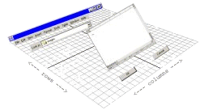
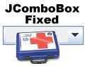

TableLayout
Welcome to the TableLayout project homepage!
TableLayout is a totally free layout manager designed to make creating user interfaces
fast and easy. It can do anything GridBagLayout can do and much, much more. Yet it
is remarkably simple and easy to use.
TableLayout uses concepts that everyone is familiar with such as spreadsheet-like
rows, columns, and cells; and word processing justifications like left, center, right,
and full. Consequentially, creating interfaces takes minutes instead of hours.
Read the tutorial articles below to quickly get familiar with TableLayout.
Once you do, you will never want to use another layout manager again!
Since its publication in 2002, TableLayout has rapidly become the most popular third
party layout manager in the world. References to it can be found in languages from
German to Japanese, and it has been used as a teaching aid in classes taught at
the Massachusetts Institute of Technology (MIT). Join the thousands of developers
who have been liberated from tedious GUI programming.
Download
Commnunity
|
|
Testimonies
Quotes from software engineers who have used TableLayout and provided unsolicited feedback...
|
| |
|
|
History
The history and future of TableLayout.
|
Articles
|

|
TableLayout Tutorial, Part 1: Introduction
Tired of using GridBagLayout or nesting panels to get the layout you want?
Learn about TableLayout and what it can do for you. Write GUIs in minutes
instead of hours.
|
| |
|

|
TableLayout Tutorial, Part 2: Building Powerful GUIs
Create much more powerful interfaces using techiques such as cell spanning, toggling
groups of controls, scrolling, and component orientation.
|
| |
|
|
Table Dancer
This is an article about TableLayout that was published by the German software magazine
Javamagazin. An English translation provided by Google is
here.
A larger copy of the picture to the left is provided
here.
|
Humor
Other Stuff
|

|
JComboBoxFixed
A fix for a bug in JComboBox that causes ActionEvents to be fired when navigating by keys.
|